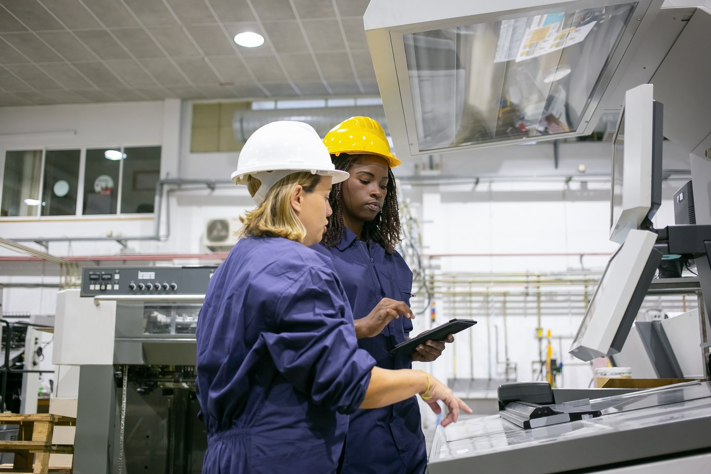
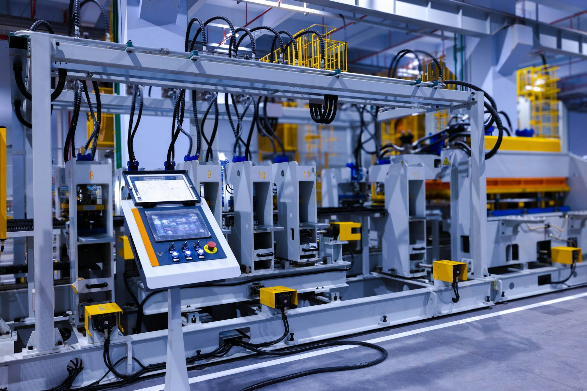
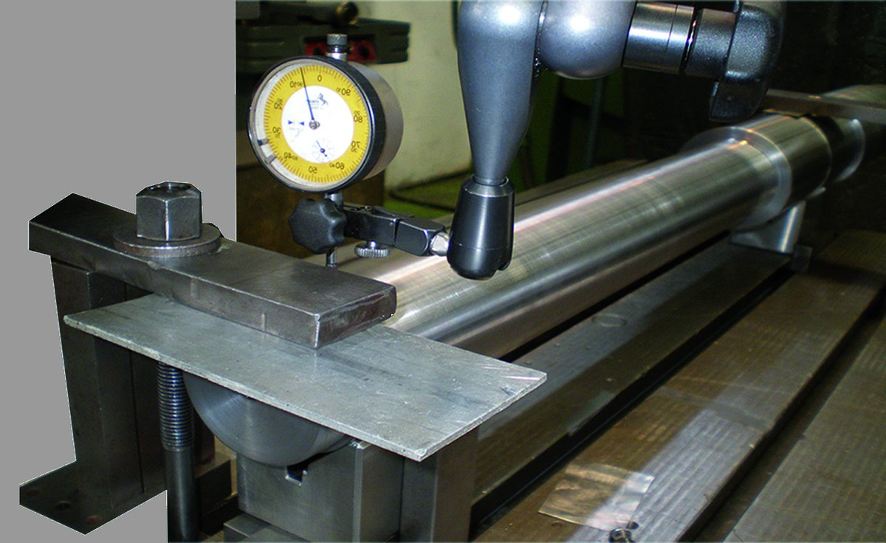

ANANTA participa en todas las fases del ciclo de vida de las instalaciones, aportando soluciones integrales que garantizan eficiencia, fiabilidad y continuidad operativa.
Desde su fase de proyecto, hasta la construcción y montaje de la instalación, puesta en marcha, mantenimiento y gestión, acompañamos a nuestros clientes en cada etapa del proyecto. Nuestra experiencia multidisciplinar y el compromiso de nuestros equipos nos permiten ofrecer un servicio global, flexible y adaptado a las necesidades de cada sector, contribuyendo al éxito y sostenibilidad de las instalaciones a lo largo del tiempo.
Gestionamos su mantenimiento, desde la realización de pequeñas reparaciones hasta la implementación de grandes proyectos llave en mano en todo tipo de sectores de actividad.

Nuestra actividad reúne todos los componentes esenciales para la mejora de la fiabilidad de los activos productivos y, a diferencia de otras empresas, tenemos la experiencia y el conocimiento profundo tanto de las máquinas como de los distintos procesos de producción y reparación, lo que nos permite afrontar con éxito y garantía la reparación de los equipos.
En nuestra sede ofrecemos soluciones para la corrección de problemas. Estudiamos las posibles mejoras a aplicar, utilizando siempre la tecnología más vanguardista, y de acuerdo con el cliente, editamos el procedimiento de trabajo más adecuado.

Diseño de planes de mantenimiento adaptados a la criticidad de cada activo, con análisis de riesgo y criterios de fiabilidad, para equipos críticos, líneas de producción y sistemas de automatización.

Análisis de vibración, temperatura, presión o lubricación para detectar síntomas tempranos de fallo y planificar la intervención con precisión, reduciendo paradas no programadas y costes de mantenimiento.

La solución más completa para garantizar el funcionamiento de equipos, instalaciones y sistemas productivos: actuaciones preventivas, correctivas y de supervisión técnica, con planes adaptados a las necesidades reales de cada planta.

Recuperamos piezas dañadas por desgaste, corrosión o abrasión, alargando su vida útil.

Disponemos de personal cualificado, equipamiento especializado y soporte logístico propio para la inspección, reparación, calibración y prueba de válvulas de todo tipo, garantizando su rendimiento y seguridad operativa.

Diseñamos, fabricamos y adaptamos piezas y repuestos a medida según las necesidades específicas de cada equipo y proceso productivo: la pieza justa, con el ajuste y el material que el trabajo exige, y al menor coste total.
Ejecución integral de montajes industriales y paradas de planta, de principio a fin.

Planificación, programación y ejecución de montajes industriales, desde el diseño hasta la puesta en marcha, con la misma exigencia técnica en una pequeña intervención que en un proyecto llave en mano.

Desmontaje, transporte y reinstalación llave en mano de maquinaria industrial, minimizando el tiempo de inactividad y conservando la precisión de cada equipo.

Planificación y ejecución de paradas programadas y de la puesta en marcha posterior, minimizando el impacto en la producción.

Alineación láser y equilibrado dinámico de bombas, turbinas y equipos rotativos, en taller o in situ.
Más allá de la programación de PLC: diseñamos y ponemos en marcha sistemas de control basados en PLC, adaptándonos a las necesidades del cliente e integrándolos con otros sistemas existentes en la planta.
Nuestra filosofía es aprovechar al máximo lo que la tecnología puede aportar para mejorar los procesos industriales de nuestros clientes.

Nuestros servicios de automatización parten de comprender las necesidades del cliente para cumplirlas en un proyecto que recoge lo que hay que implementar: desde la modificación de una instalación existente hasta el diseño y la puesta en marcha de un sistema de control distribuido (DCS). Contamos con un equipo de ingenieros que aportan soluciones de automatización para mejorar o instalar sistemas de control de forma eficaz y segura.

Supervisión y control de las industrias de forma centralizada y en tiempo real. Los sistemas de control industrial (ICS) son esenciales para alcanzar los objetivos de coste, cantidad y calidad.

Interconectamos los datos de las operaciones industriales con las aplicaciones corporativas, para tomar decisiones basadas en datos reales y actualizados.